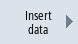
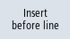
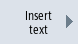

Procedure
  | 1. | Select the "Start-up" operating area and press the "Mach. data" softkey. |
 | 2. | Press the softkeys "User views", "Manage view" and |
| | | "New view". The "New View" window opens. |
 | 3. | Enter the desired view name. Press the "OK" softkey. If a user view already exists with the same name, you receive a safety prompt as to whether the existing view should be overwritten. |
|  | 4. | Press the "Enter data" softkey. The "Insert data" selection box opens. |
  | 5. | Open the selection list with the <INSERT> key, select a machine data area and press the <INPUT> key. |
  | | Select a machine data item with the cursor keys or using the "Find" softkey. |
 | | |
|  | 6. | Press the "Insert before line" or "Insert after line" softkey to insert the selected machine data at the required position in the user view. |
| | | Note: You can navigate in the open user view with the mouse and select a line without closing the list box. |
 | 7. | Press the "Back" softkey to close the list box and return to the user view you want to edit. Your entries are automatically stored. |
|  | 8. | Press the "Insert text" softkey to insert any text in the open user view. The "Insert Text" input window opens. |
| | 9. | Enter a text and explanatory description for the text and press the "Insert before line" or "Insert after line" softkey to accept the text. |
| | 10. | Press the "Back" softkey to save your entries and return to the user view you are editing. |
Selecting a particular machine data item
| | | You can use the Search dialog box to look for a particular data item. |
See also:
Editing the user view